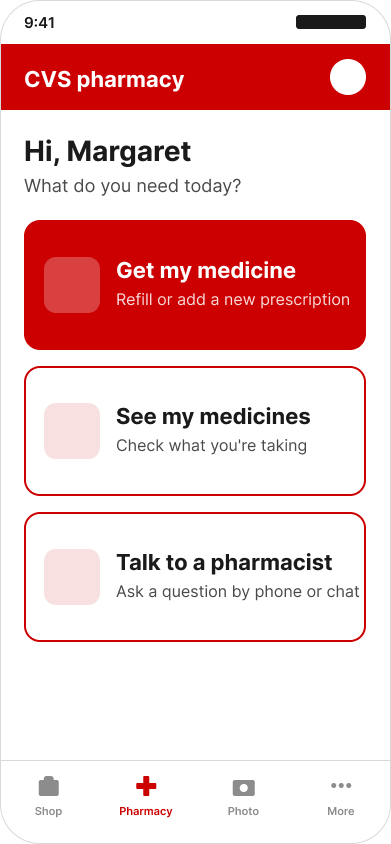
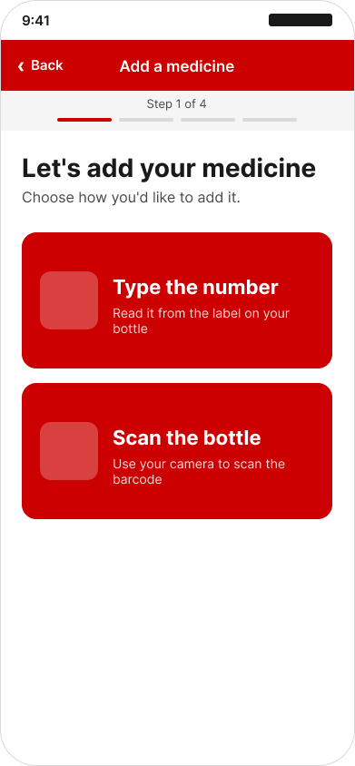
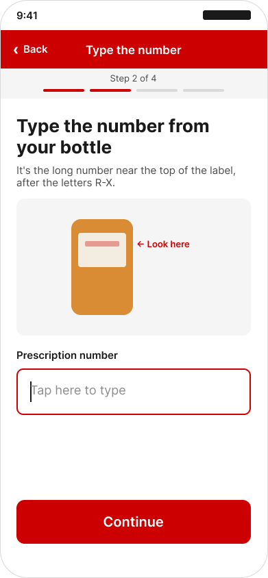
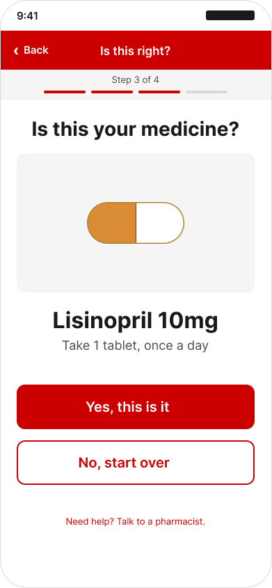
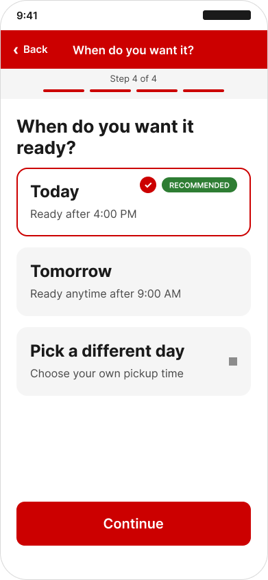
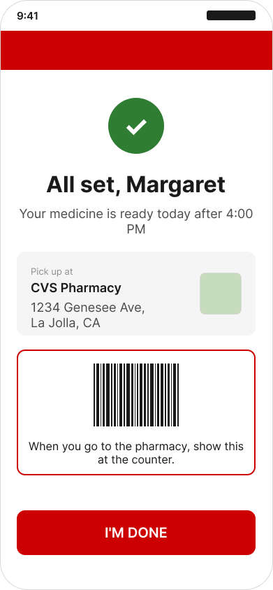

PROBLEM
The elderly, a vulnerable population already prone to mobility and independence issues, are subject to a decreased ability to adhere to prescriptions, leading to further health issues and lack of independence.
SO, WHY ARE THE ELDERLY WORSE AT USING TECHNOLOGY?
- Cognitive, mobility, visual, auditory, and fine motor skill decline plays a factor. Recent research shows a strong correlation between digital competence and poor vision, physical ability, and poor memory (Heponiemi, 2023).
- Older generations, due to differences in the types of media they were exposed to, actually process information differently. "Digital natives" prefer rapid info, parallel processing, and multitasking, whereas "digital immigrants" prefer singular processing, text, and sequential steps (Prensky, 2001).
Note: These effects disproportionately affect older adults that are low-income or living in rural areas.
The answer to solving differences in technology literacy isn't always found through addressing physical barriers like vision. It is a complex issue encompassing areas of epistemology, cognitive science, and history. In other words, there's more to accessibility than font sizes and contrasting colors.

OUR APPROACH
HOW MIGHT WE DISPLAY INFORMATION THROUGH SEQUENTIAL STEPS RATHER THAN PARALLEL PROCESSING TO ACCOUNT FOR A GENERATIONAL DIFFERENCE IN COGNITIVE PROCESSING?
What functions do "digital natives" take for granted that "digital immigrants" don't find intuitive?
OUR DESIGN
We decided to focus on the refill flow, built around sequential single-choice screens rather than the dense, parallel-option layouts younger users tend to navigate more easily.






CONCLUSION
Through this project we learned how to design through an unconventional lens. I enjoyed the cognitive perspective we took, as I was able to think a lot about generational differences in thinking and processing. We hope that in the future companies can design with such accessiility in mind in order to protect our most vulnerable populations. It's also worthy to note that as accessibility for marginalized populations improves, so does the experience for everyone else.